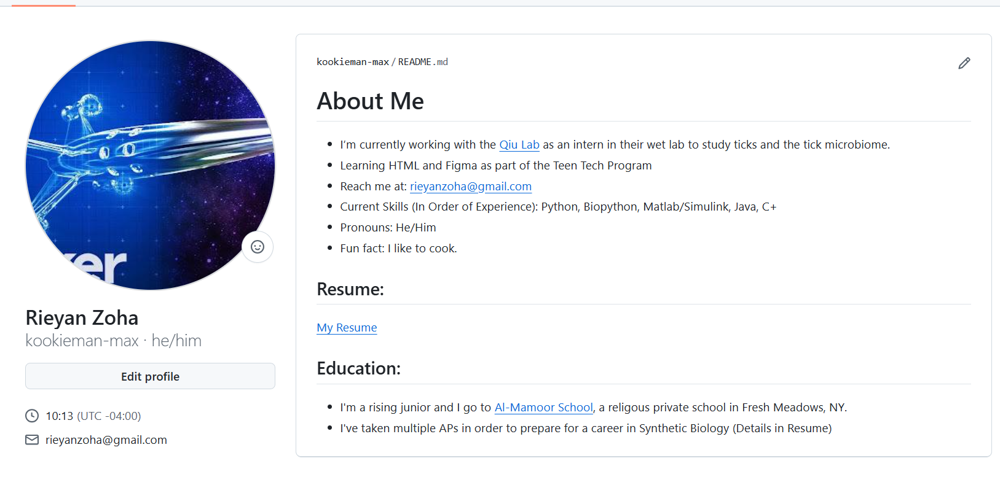
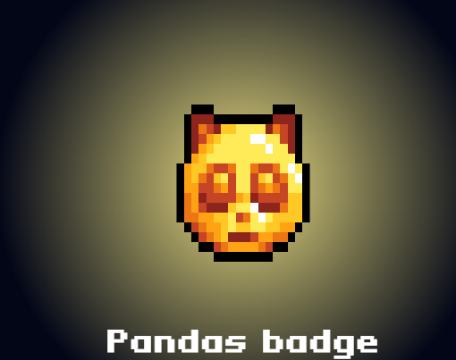
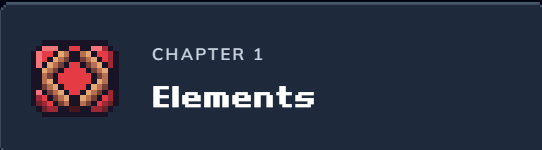
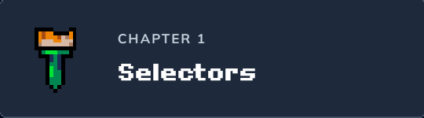
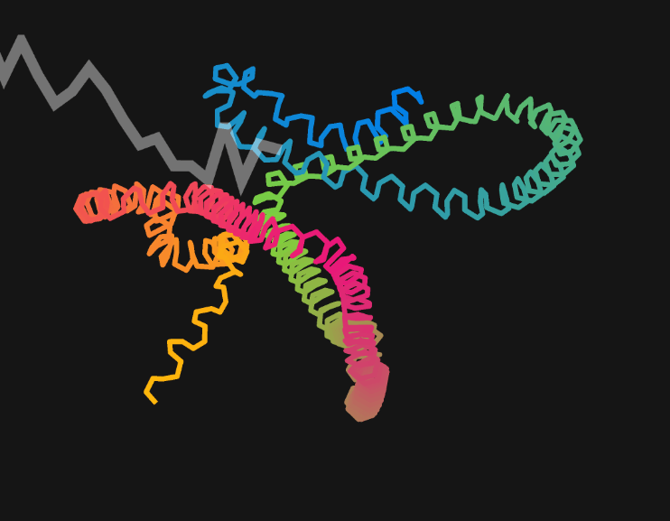
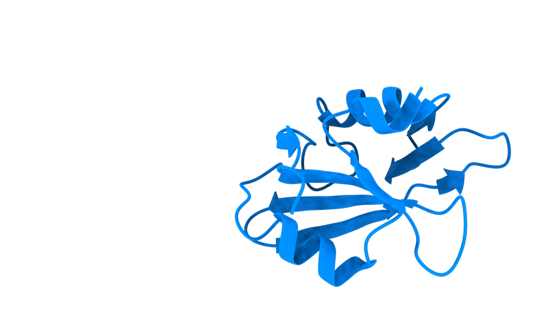
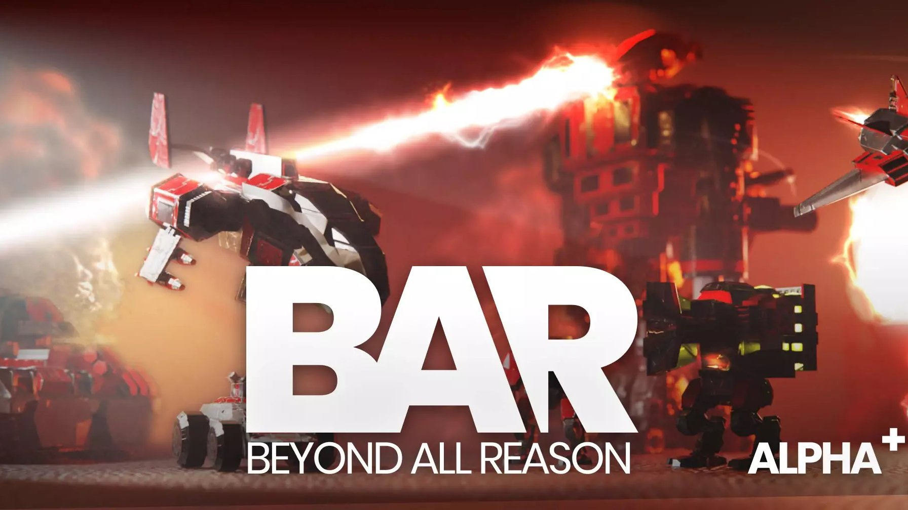
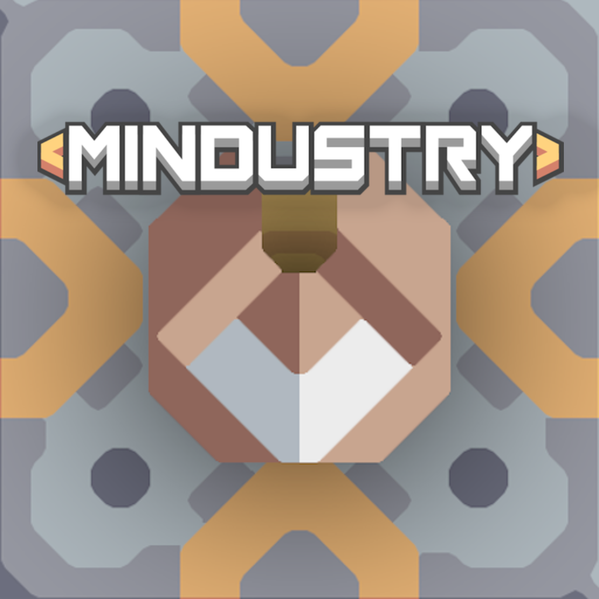
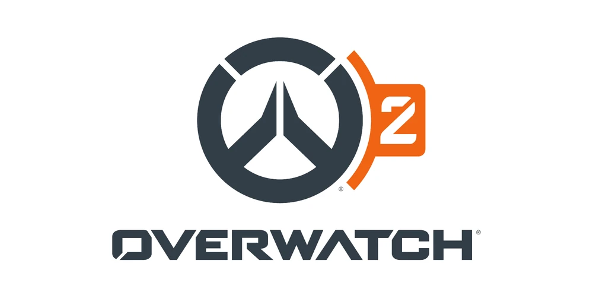

My Digital Portfolio.
Technical Skills
- HTML
- CSS
- JavaScript
- Python
- Git
- GitHub
- Pandas
- NumPy
Projects

My Github Profile
Teen Tech helped me build and improve my GitHub profile with a README.
Here is my Github Page, with a detailed README and many repositories containing other teen tech projects.

The John Jumper Project
During my first week at Teen Tech, a group consisting of me and several other students worked together to create this project. We learned about John Jumper, who helped build AlphaFold. AlphaFold is a revolutionary tool in the field of biology, as biologists can use it to predict protein folding with remarkable accuracy. This has opened the door to cheaper creation of novel drugs and products.

Civic Pulse
My biggest project so far has been Civic Pulse, which aims to improve communication between community members and local government. The current screenshot is just the app skeleton, and I hope to complete it by the end of Week 5 of Teen Tech.
Learning

Python
I’m learning Python through Codedex, working on core concepts such as variables, functions, and data types. This practice helps me apply coding skills to real projects and build stronger technical habits. I had a very strong foundation in Python prior, so this just helped reinforce my learning.

Pandas
I’m also learning Pandas through Codedex, working on core concepts such as data manipulation and analysis. I had no prior experience with Pandas, so this really helped to expand my data science skills.

HTML
I learned a lot of HTML through Teen Tech and Codedex, and I used core concepts such as elements, attributes, and structure to build my projects like this Portfolio. I had a little prior experience with this, so this was very helpful for learning web development.

CSS
CSS is very important for web development, and I used it, with the help of AI, to improve the appearance of my projects like this Portfolio through modifying my HTML. I had zero prior experience with this.
Future Endeavors
I plan on exploring R and its applications in data analysis and visualization. I discovered a course called FasteR on Github and I plan to learn it through that since I want to become a synthetic biologist and R is very important for that. I also want to explore the power of machine learning for creating novel organisms


Favorite Games
Beyond All Reason

A real-time strategy game that combines elements of RTS and simulation, focusing on large-scale battles and complex unit management.
Mindustry

A tower defense game in the same vein as Factorio, where players build and manage complex production systems.
Overwatch 2

Overwatch 2 is a popular team-based first-person shooter game developed by Blizzard Entertainment.